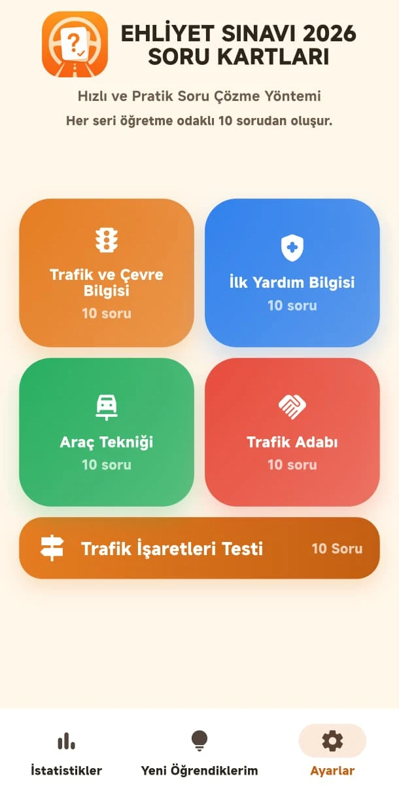
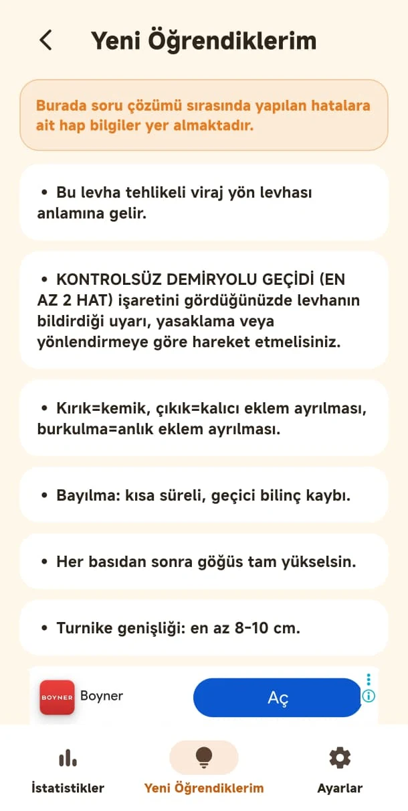
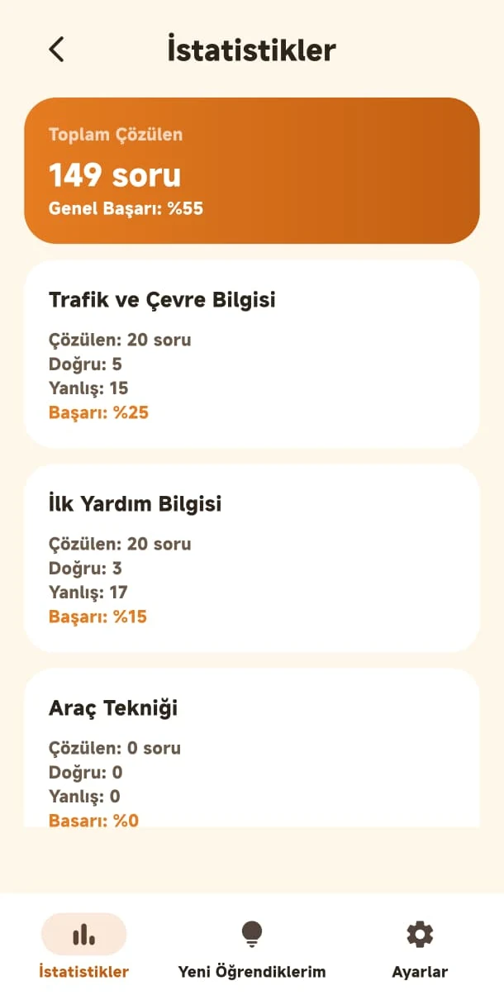

Trafik, ilk yardım, araç tekniği ve trafik adabı başlıklarını ayrı çalışın.
Sınav hazırlığı · Google Play’de yayında
Ehliyet Sınavı 2026
Trafik, ilk yardım, araç tekniği ve trafik adabı konularını soru kartlarıyla çalışın; öğrendiklerinizi ve ilerlemenizi tek yerde görün.
HEMENGoogle PlayAPP STOREÇok yakında



Yol kenarından
Bu işaretleri tanıyor musunuz?
Bir levhaya dokunun, anlamını görün.
Uygulama hakkında
Sınava düzenli ve odaklı hazırlanın.
Konuları karışık listeler yerine kategorilere ayrılmış soru kartlarıyla çalışmanızı kolaylaştıran pratik bir hazırlık alanı.
Bilgileri kısa ve odaklı kartlarla tekrar edin.
Yeni öğrendiğiniz sorulara daha sonra yeniden dönün.
Çalışma durumunuzu konu bazında görün.
3 soruda deneyin
Sınava ne kadar hazırsınız?
Uygulamadaki sorulardan üçü. Cevabınızı seçin, sonucu hemen görün.
-
Trafik ve Çevre
Yeşil ışık yanmasına rağmen kavşağın çıkışı tıkalıysa sürücü ne yapmalıdır?
Doğru!Doğru cevap B. Çıkış yoksa yeşilde de beklenir.
-
İlk Yardım
Kolunda şiddetli dış kanama olan kişide ilk uygulanacak yöntem nedir?
Doğru!Doğru cevap B. Kanamada ilk adım doğrudan basıdır.
-
Araç Tekniği
Radyatördeki su miktarının azalması aşağıdakilerden hangisine neden olur?
Doğru!Doğru cevap A. Soğutma sıvısı eksikliği hararete ve ciddi motor hasarına yol açar; sıcak motorda radyatör kapağı açılmaz.
0/3Kalan sorular uygulamada sizi bekliyor.Google Play’den indir ↗
Ehliyet sınavına kartlarla hazırlanmaya başlayın.
Android uygulamasını Google Play üzerinden indirebilirsiniz.